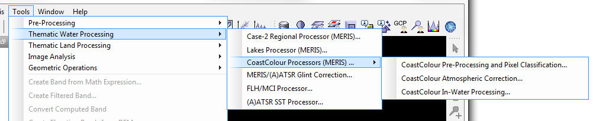

| The CoastColour Processors |
|
The CoastColour Processors were developed within the ESA DUE CoastColour Project, which was launched by the European Space Agency to fully exploit the potential of the MERIS instrument for remote sensing of the coastal zone. The CoastColour project website [1] serves as an entry point to to all kinds of detailed information on the project. A summary of algorithms, processing steps as well as product specifications can be found in the CoastColour Product User Guide [2].
The CoastColour Processors can be invoked from the VISAT 'Processing --> Thematic Water Processing'
sub-menu by selecting
the CoastColour Processors (MERIS)... entry, or in batch mode by using the command line
tool gpt (Graph Processing Tool) which is located
in the BEAM bin directory.

The 'Pre-Processing and Pixel Classification...' processor (also referred as 'L1P' processor throughout this
documentation) provides a refinement of top of atmosphere radiance and a pixel classification.
The pixel classification is based on the algorithm used in the
The 'Atmospheric Correction...' processor (also referred as 'L2R' processor) provides an atmosphere and sun glint corection based on a neural network approach.
The 'In-Water Processing...' processor (also referred as 'L2W' processor) provides water properties in Case 2 waters derived from various neural network approaches.
[1]
CoastColour Project Web Site: www.coastcolour.org
[2]
DUE CoastColour Product User Guide. ESA Project Deliverable D-21, Version 2.1, 03 June 2011.
[3]
OceanColour Project Web Site: www.esa-oceancolour-cci.org